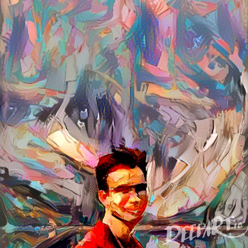
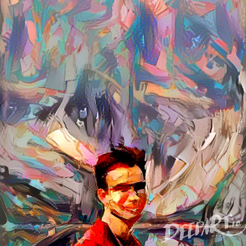

6.S198 Assignment 2
Cole Hoffer
Email: choffer@mit.edu
Problem 1
The classifications are almost always wrong because the initial weights were chosen at random. Thus, the odds of correctly classifying an image in this state is 10%, as there are 10 possible labels.
Problem 2
- With MNIST, a test accuracy of 87.5% was reached in a little under 6 seconds, performing about 925 inferences per second and trainging about 1050 examples per second (speeds up as time goes on). With fashion MNIST, things were a little worse with a test accuracy 78.75% in 4.5 seconds, with an inference rate of around 900 and an example/sec rate of about 1300 at the end. This discrepencacy in accuracy and speed almost certainly arrises from the fact the images in fashion MNIST are much more complex, thus will require more training.
- With CIFAR, things were much worse, with a test accuracy of 23% reached in about 7 seconds, with and inference rate near 700 and a training example/sec rate of about 900.
- Added the extra FC layer...
- ...and everything went horribly. All training rates and times decreased, and more importantly, the test accuracy was about 9.3% at the end, like that's worse then randomly guessing. The issue is that the extra FC is creating an exploding gradient issue, caused by the addiontal layer, thus the model cannot learn when training.
Problem 3
Adding the ReLu helped improve the accuracy, esspecially with the 100 FC -> ReLu -> 10 FC network, which was able to reach accuracies near or higher then the original network setup.
Problem 4
-
Data in ascending order of number of FC layers (1 layer, 2 layers...)


- One Fully Connected Layer: Test accuracy around 90%, training time of 16.5 seconds.
- Two Fully Connected Layers: Test accuracy around 87.5%, training time of 27.5 seconds.
- Three Fully Connected Layers: Test accuracy around 87.5%, training time of 31.5 seconds.
- Four Fully Connected Layers: Test accuracy around 85%, training time of 51.8 seconds.
- Five Fully Connected Layers: Test accuracy around 75%, training time of 77.8 seconds.
There did seem to be a bit of overfitting in the networks with the higher number of FC layers, mostly creating situations where the would reach a highly fluctuation plateau in terms of training/testing accuracies. In general, each new layer increased the training time, so basically it's about finding the network structure that will give you the highest accuracy, but in a managable amount of time.
-
Funneled on left, reverse funnel on right.
The normal funnel (high -> mid -> low number of hidden units) performed the best, and actually the best of all the tests we've done to this point. This is structure works best because it deducts the important information at each level, and "discards" what doesn't matter as it goes to a deeper layer with less hidden unitys.
-
The Fashion-MNIST and CIFAR datasets had similar relative results, where the there eventually reached points where doing too manyh layers hurt accuracy and training times. The funneling structure did help accuracy in both, but the only thing out of the ordinary was that a "reverese funnel" structure (50 -> 250 -> 10 hidden units) seemed to allow the CIFAR testing accuracy to be higher and less fluctuating (results images below), but this could again have to something to do with CIFAR's more detailed data.
Normal funnel structure on left, reverse funnel on right
Problem 5
In general, my partner and I saw two main things. First increasing the size of each batch essentially increased the amount of smoothness along the loss curve, suggesting the model learning better from each exmaple. Second, increasing the numebr of batches increased accuracy overall, as there was more data to test on. Both increases did affect the time it took to train though, so eventually it wouldn't be worth the time to maxmimize the number of batches you might want to train on.
Problem 6
-
With the 200 batch size, 500 batches, we found that the model only tended to make mistakes on weirdly drawn figures, that sometimes just straight up looked like other numbers. For example in the first failed example, the "two" hardly has a curved body, which makes it confusable with a fancy 1 (version with head and a tail). Also the second example posted is just not a legible number, so examples like these are basically random in nature.

-
As mentioned in problem 5, increasing the size of a batch increased the loss curve smoothness and increasing the number of batches increased overall accuarcy. We tried doing both individually, but eventually found increasing both to a batch size of 200 and number of batches to 500 was a good balance.
-
I created a model similar to the one we did in with the UI simulation, with 3 FC connected layers (150, 50, 10 hidden units) and ReLu layers in between. It had similar results as before, reaching a final accuracy of 85.95%, and only seeming to struggle on the weirder test images.
Problem 7
The Fashion-MNIST again had similar results as it did with the web based UI builder. It was still a bit less accurate then regular MNIST, which makes sense as it is more complex data in each image. The test accuracy did seem to still be increasing by the time our model stopped, so if we were willing to give the model more time, it would continue to become more accurate.
Model Code as Text File Link
Problem 8

 
